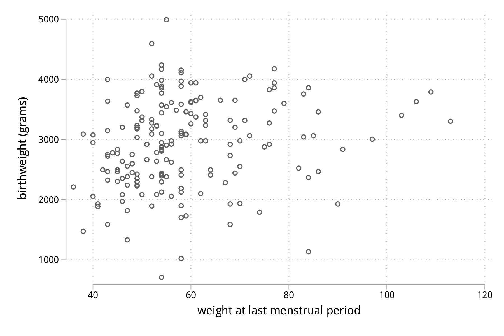
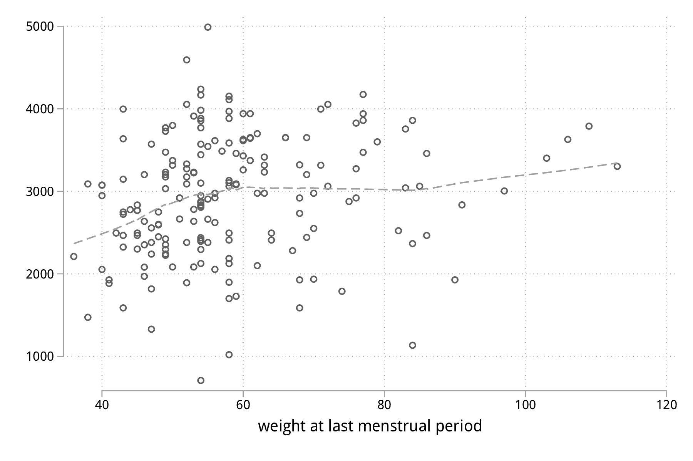

Stata : modélisation statistique
Table des matières
Dans cet exposé, on s’intéressera à la construction de modèles de régression explicatifs ou prédictifs.
Il existe un très bon ouvrage traitant du modèle linéaire généralisé, à présent dans sa quatrième édition et publié chez Stata Press : Generalized Linear Models and Extensions, de Hardin & Hilbe.
La mise en oeuvre d’un modèle de régression a déjà été discutée brièvement dans le tutoriel d’introduction à Stata. Dans ce chapitre, on va s’intéresser à l’estimation des paramètres d’un modèle de régression, à la sélection de modèle dans un cadre explicatif, au diagnostic du modèle, et à la prédiction ponctuelle ou par intervalles. On prendra pour base des données observationnelles issues d’enquêtes ou d’études cliniques transversales. Les séries chronologiques et les données longitudinales seront traitées dans des chapitres séparés.
Le modèle de régression linéaire simple
Dans un premier temps, procédons à quelques rappels concernant la régression linéaire simple, la corrélation linéaire et le test de Student. Les notions connexes telles que les associations non linéaires ou les approches non paramétriques seront traitées ultérieurement.
Les données d’illustration peuvent être chargées directement depuis internet à l’aide de la commande webuse. Il s’agit d’une enquête épidémiologique rétrospective dans laquelle on s’intéresse aux facteurs de risque d’un bébé ayant un poids inférieur à la norme, selon les normes américaines des années 90. Ces données sont extensivement analysées dans l’ouvrage de Hosmer & Lemeshow [1]. Au total, le tableau de données contient 11 variables, la variable réponse étant le poids des bébés (bwt) :
webuse lbw describe, simple
set more off webuse lbw (Hosmer & Lemeshow data) describe, simple id low age lwt race smoke ptl ht ui ftv bwt
La relation entre le poids des bébés (en grammes) et le poids des mères (initialement en livres, converti en kilogrammes) est représentées dans la figure suivante sous la forme d’un simple diagramme de dispersion.
set scheme plotplain replace lwt = lwt / 2.204623, nopromote graph twoway scatter bwt lwt graph export "fig-03-scatter-bwt-lwt.pdf", fontface(DroidSans) replace

Figure 1 : Relation entre le poids des bébés et le poids des mères
Il est tout à fait possible et largement recommendé de rajouter une courbe loess afin d’évaluer visuellement les écarts à la linéarité concernant la relation entre ces deux variables. La commande lowess peut être combinée à scatter :
graph twoway scatter bwt lwt || lowess bwt lwt, legend(off) graph export "fig-03-lowess-bwt-lwt.pdf", fontface(DroidSans) replace

Figure 2 : Relation entre le poids des bébés et le poids des mères
La corrélation entre ces deux variables s’obtient grâce à correlate :
summarize bwt lwt correlate bwt lwt
summarize bwt lwt
Variable | Obs Mean Std. Dev. Min Max
-------------+---------------------------------------------------------
bwt | 189 2944.286 729.016 709 4990
lwt | 189 58.34392 13.88108 36 113
correlate bwt lwt
(obs=189)
| bwt lwt
-------------+------------------
bwt | 1.0000
lwt | 0.1863 1.0000
Références
| [1] | David W. Hosmer and Stanley Lemeshow. Applied Logistic Regression. Wiley, 2000. |